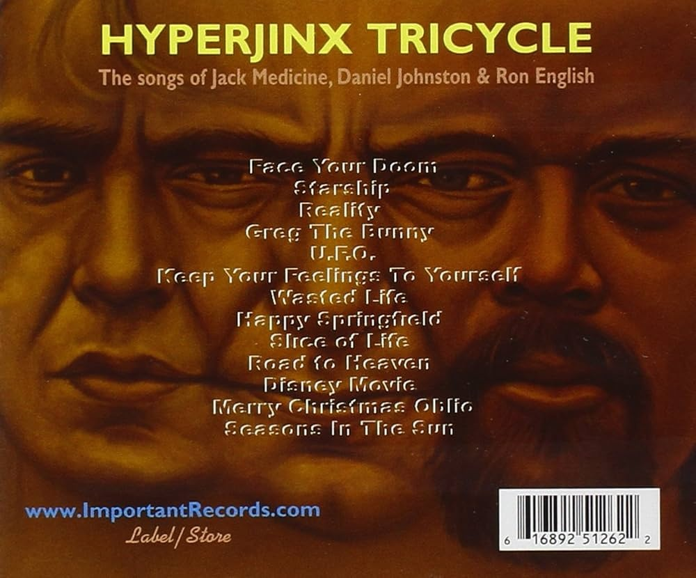
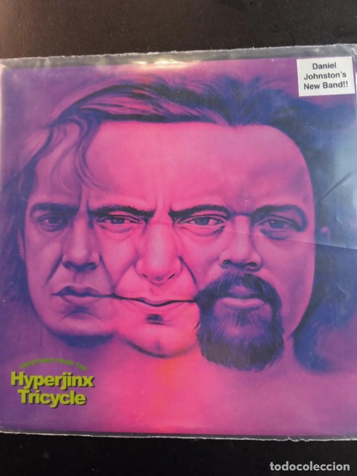

Exhibitions
Bipolar Surrealism, Opera Gallery, New York, New York, US, May 24–June 11, 2001.
Literature
Ron English, Popaganda: The Art & Subversion of Ron English (San Francisco: Last Gasp, 2001), p. 147. ISBN 1-887128-60-3.
Ron English, Son of Pop: Ron English Paints His Progeny (San Francisco, California: 9mm Books and The Shooting Gallery, 2007), p. 33. ISBN 978-0-9766325-1-1.
Notes
Also known as Hyperboys.
This image was used as album cover art for Hyperjinx Tricycle: The Songs of Jack Medicine, Daniel Johnston & Ron English.
Ancillary Documentation
The following materials document album-cover use connected to the work.

